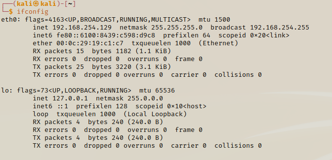

View device IP address:
iconfig (MacOS or Linux)

ipconfig (Windows)

This returns two types of IP addresses - IPV4 & IPV6. The common IP address that is used for IPV4 is inet.
IPV4 Address

IPV6 uses inet6 which is a newer version of the IP address.
IPV6 Address

The IP addresses communicate over Layer 3 (from the OSI Model)
- The IP address has 8 bits for each numerical value
- This means that the IP address has 4x 8 bits to make up the whole IP address number
- The IP address will have 32 bits (4x 8 bits), which is the same as 4 bytes
IPV4 vs IPV6- With an IPV4 we have 4.29B different IP addresses by multiplying 2 to the power of 32 (32 bits).
- With IPV6 we have a larger range of IP addresses because we are multiplying 2 to the power of 128 (128 bits). This gives us 3.402...e+38 (which is a lot!)
- The IPV4 addresses are all full, but they are still being used because of NAT (Network Address Translation). They give us private IP address which can host many networks across a public IP address.
Private IP addresses
These below are the different private IP addresses at our disposal.
192.168 - IP addresses that are for small networks (like your home or small business)
A Class A or Class B address is used for bigger buisnesses in order to host more netowrks. Small buisnesses can also use these IP addresses.

As you can see, you one private IP address can have potentially millions of networks, with each network allowing hundreds (sometimes thousands or millions) of hosts on each network.
Small buisnesses and coorperations will use 10.0.0.0 addresses becasue it will give them millions of hosts on each network, but will have fewer networks.
REMEMBER!!
- IPV4 & IPV6 addresses are Layer 3 protocols
- A router is a Layer 3 protocol
- All your network traffic goes through 1x IP address
- IPV4 uses NAT to contain multiple networks and multiple hosts for each network for each private IP address